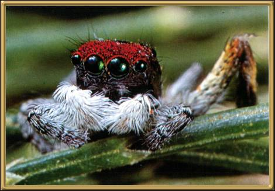

Photographer: Unknown
These spiders are really very small - only 2 or 3mm (maybe a 1/4 inch), but they can jump quite a distance. We have a lot of them here, but they are so small that they generally go unnoticed. They are harmless to people and very beautifully colored.